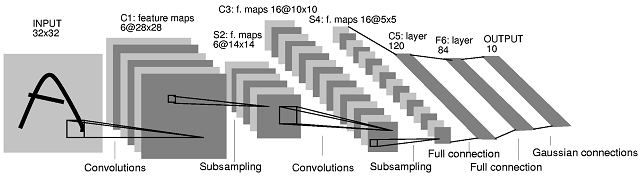

卷积神经网络[zz]
文章目录
卷积神经网络
简称CNN或简称 - 是深度学习的核心，近年来作为神经网络研究中最突出的应变而出现。他们彻底改变了计算机视觉，在许多基本任务中取得了最先进的成果，并在自然语言处理，计算机试听，强化学习和许多其他领域取得了很大进展。我们今天看到的许多新服务和功能已经被科技公司广泛部署。它们有许多不同的应用，包括:
- 检测和标记图像中的对象，位置和人物
- 将语音转换为文本并合成自然声音的音频
- 用自然语言描述图像和视频
- 跟踪道路并在自动驾驶车辆的障碍物周围航行
- 分析视频游戏屏幕以指导自主代理人播放它们
- 具有生成模型的“幻觉”图像，声音和文本
虽然自20世纪80年代以来一直存在争议至少以他们目前的形式，并且他们的根源在于早期神经科学研究，他们最近才在更广泛的科学界取得了声誉，在多个领域的重要科学问题上取得了一系列显着的成功。他们主要通过引入一种新的层来扩展神经网络，旨在提高网络应对位置，规模和视点变化的能力。此外，它们变得越来越深，包含数十个甚至数百个层，形成图像，声音以及游戏板和其他空间数据结构的分层组合模型。
由于他们在以视觉为导向的任务中取得了成功，他们已被创意技术专家和交互设计师采用，使他们的安装不仅可以检测运动，还可以主动识别，描述和跟踪物理空间中的物体。他们也是Deepdream和样式转移，神经应用首先引起了新媒体艺术家的注意。
接下来的几章将重点介绍它们及其应用，其中包括它们及其工作原理，描述它们的属性，以及随后的章节，重点关注它们的创意和艺术应用。
普通神经网络的弱点
为了理解convnets提供的创新，首先回顾普通神经网络的弱点是有帮助的.
回想一下，在训练有素的单层普通神经网络中，输入像素和输出神经元之间的权重最终看起来像每个输出类的模板。这是因为它们被限制为捕获单个层中每个类的所有信息。这些模板中的每一个看起来都是属于该类的样本的平均值。 在MNIST数字上训练的单层神经网络的权重为每个类捕获,但是在更复杂的类上在CIFAR-10中，类内的变化太大，无法可靠地完成。
在MNIST数据集的情况下，我们看到模板是相对可辨的并且因此是有效的，但是对于CIFAR-10，它们更难以识别。原因是CIFAR-10中的图像类别比MNIST具有更多的内部变化。狗的图像可能包含卷曲或伸展的狗，具有不同的毛色，与其他物体混杂，以及各种其他扭曲。被迫在一层中学习所有这些变化，我们的网络不会比在所有狗图片上形成非常弱的平均值更好，并且无法在一致的基础上准确地识别看不见的那些。
我们可以通过创建隐藏层来解决这个问题，使我们的网络能够形成已发现功能的层次结构。例如，假设我们制作了一个用于分类MNIST的2层神经网络，其中包含一个包含10个神经元的隐藏层和一个最终输出层，其中还包含10个神经元用于我们的数字(如前所述) 我们训练网络并提取权重。在下图中，我们使用与之前相同的方法可视化第一层权重，并且我们还将条形图可视化为将10个隐藏神经元连接到10个输出神经元的第二层权重(我们仅显示前两个类)为简洁起见)。 第一层权重(顶行)和第二层权重(如条形图)，用于2层的前两个输出神经元在MNIST上训练的神经网络。
第一层权重仍然可以像以前一样可视化，但不是看起来像数字本身，它们似乎是它们的片段，或者可能在所有数字中找到的更一般的形状和模式不同程度。第一行条形图描绘了每个隐藏层神经元对输出神经元的相对贡献，其对0位进行分类。它似乎有利于那些具有外环的第一层神经元，并且它不利于中间具有高权重的那些神经元。第二行是输出1-神经元的相同可视化，其优选那些对中间像素高的图像显示出强烈活动的隐藏神经元。因此，我们可以看到网络可以学习第一层中手写数字更通用的特征，并且可能存在于某些数字中但不存在于其他数字中。例如，外环或环对8和0有用，但不适用于1或7;中间的对角线笔划对7和2有用，但不对5或0有用，右上角的快速变形对2,7和9有用，但对5或6则不适用。
作为CIFAR-10案例的一个相关例子，我们之前看到很多马的图片都是左侧和右侧的马，使得上面的模板模糊地像一头双头马。如果我们创建一个隐藏层，我们的网络可能会在隐藏层中形成一个“面向右边的马”和“左向马”模板，而马的输出神经元可以为每个人提供强大的权重。这不是一个特别优雅的改进，但随着我们的扩展，我们看到这样的策略如何为我们的网络提供更大的灵活性。在早期图层中，它可以学习更具体和一般的特征，然后可以在后面的图层中进行组合。
尽管有这些改进，但网络能够记住几乎无穷无尽的排列组合仍然是不切实际的，这些排列组合将完全表征不同图像的数据集。为了捕获那么多信息，我们需要太多的神经元来实现我们实际可以存储或训练的能力。 convnet的优势在于它们将允许我们以更有效的方式捕获这些排列。 ##组合性
我们如何有效地编码许多类图像之间的变化？通过考虑一个例子，我们可以对这个问题有一些直觉。
假设我给你看了一张你以前从未见过的汽车照片。您可以通过观察它是汽车各种属性的排列来将其识别为汽车。换句话说，图片包含构成大多数汽车的部件的一些组合，包括挡风玻璃，车轮，车门和排气管。通过识别每个较小的部件并将它们相加，您会发现这张照片属于汽车，尽管从未遇到过这些部件的精确组合。
一个小天使尝试做类似的事情:学习对象的各个部分并将它们存储在单个神经元中，然后将它们相加以识别更大的对象。出于两个原因，该方法是有利的。一个是我们可以在较少数量的神经元中捕获更多种类的特定对象。例如，假设我们为不同类型的车轮记忆10个模板，为车门记住10个模板，为挡风玻璃记忆10个模板。因此，我们以30个模板的价格捕获10美元* 10 * 10 = 1000美元不同的汽车。这比为汽车保留大约1000个单独的模板要有效得多，这些模板中包含很多冗余。但更好的是，我们可以为不同的对象类重用较小的模板。货车也有轮子。房子也有门。船舶也有挡风玻璃。我们可以构造一组更多的对象类作为这些较小部分的各种组合，并且非常有效地这样做。
＃先前和回顾的历史
在正式展示了如何检测这些特征之前，让我们先看看它们的一些重要前因，以了解我们解决前面所述问题的方法的演变。
Hubel＆Wiesel(20世纪60年代)的实验
在20世纪60年代，神经生理学家David Hubel和Torsten Wiesel进行了一系列的实验研究动物视觉皮层的特性。在最值得注意的实验之一中，他们测量了猫的大脑的电响应，同时在电视上用简单的图案刺激它屏幕。他们发现，早期视觉皮层中的神经元以分层方式组织，其中连接到猫视网膜的第一个细胞负责检测边缘和条形等简单图案，然后通过组合使用后期层来响应更复杂的图案。早期的神经活动。 Hubel＆Wiesel experiment
Fukushima的Neocognitron(1982)
Hubel和Wiesel的实验直接被Kunihiko Fukushima在设计Neocognitron，一个试图模仿视觉皮层的这些层次和组成属性的神经网络。 neocognitron是第一个使用分层图层的神经网络架构，其中每个层负责从前一个输出检测模式，使用滑动过滤器将其定位在图像中的任何位置。 Neocognitron
虽然neocognitron在模式识别任务中取得了一些成功，并将卷积滤波器引入神经网络，但由于缺乏训练算法来学习滤波器，因此它受到了限制。这意味着模式检测器是针对特定任务手动设计的，使用计算机视觉中的各种启发式和技术。当时，尚未应用于训练神经网络，因此没有简单的方法来优化新神经元或在不同的视觉任务上重复使用它们。
LeNet(1998)
在20世纪80年代后期，Geoffrey Hinton等首次成功地将反向传播应用于神经网络的训练。在20世纪90年代，由Hinton的前博士后学生Yann LeCun领导的AT＆T实验室团队 /)训练了一个卷积网络，昵称为“LeNet”，将手写数字图像分类为99.3％的准确度。他们的系统使用了一段时间来自动读取美国印刷的10-20％支票中的数字。 LeNet有7层，包括两个卷积层，其架构如下图所示。  http://yann.lecun.com/exdb/lenet/ LeNet
他们的系统是第一个应用于工业规模应用的卷积网络。尽管取得了这样的成功，但许多计算机科学家认为神经网络无法扩展到涉及更多类，更高分辨率或更复杂内容的识别任务。出于这个原因，大多数应用的计算机视觉任务将继续由其他算法执行超过十年。
AlexNet(2012)
在2010年初，卷积网络开始接管计算机视觉 - 并且更广泛地说是机器学习。 2009年，普林斯顿大学[计算机科学系]的研究人员(https://www.cs.princeton.edu/)，由[费飞飞]领导(http://vision.stanford.edu/feifeili/编译了[ImageNet数据库](http://www.image-net.org/)，这是一个包含超过[1400万](http://image-net.org/about-stats)标签的大型数据集使用[Mechanical Turk](https://www.mturk.com/mturk/welcome)手动注释为1000个类的图像。 ImageNet是迄今为止发布的最大的此类数据集，并迅速成为研究界的主要内容。一年后，ImageNet大规模视觉识别挑战赛(ILSVRC)作为与ImageNet合作的计算机视觉研究人员的年度竞赛启动。 ILSVRC欢迎研究人员参与许多重要基准的竞争，包括分类，定位，检测等 - 这些任务将在本章后面详细介绍。 Mechanical Turk
在比赛的前两年，获奖作品都使用了当时的计算机视觉标准方法，并没有涉及使用卷积网络。分类任务中最受欢迎的条目在前25个错误中排名前5(并未猜测前5个预测中的正确类别)。 2012年，由Geoffrey Hinton，Ilya Sutskever和Alex Krizhevsky领导的多伦多大学的团队提交了一个昵称为“AlexNet”的深度卷积神经网络以超过40％的幅度赢得了比赛。 AlexNet将前5名分类错误的记录从26％下调至15％。 AlexNet
从第二年开始，几乎所有ILSVRC的参赛作品都是深度卷积网络，2017年，即ILSVRC的最后一年，分类错误已经稳步下降到接近2％。 ImageNet分类中的Convnets 现在甚至超过人类！这些巨大的成果在很大程度上推动了随之而来的深度学习的兴奋，许多人认为它们将计算机视觉彻底改变为一个领域。此外，目前在网络架构中常见的许多重要研究突破 - 例如残留层 - 作为ILSVRC的条目被引入。
卷积层如何工作
尽管有自己的专有名称，但与我们迄今为止看到的神经网络并不完全不同。实际上，它们继承了早期网络的所有功能，并且主要通过引入一种新类型的层(称为convolutional layer)以及模仿和改进neocognitron引入的思想的许多其他创新来改进它们。因此，包含至少一个卷积层的任何神经网络都可以称为卷积网络。
过滤器和激活映射
在本章之前，我们只看了_fully-connected layers_，其中每个神经元都连接到前一层中的每个神经元。卷积层打破了这一假设。它们实际上在数学上与完全连接的层非常相似，仅在架构上有所不同。让我们首先回想一下，在一个完全连接的层中，我们计算神经元$ z $的值作为所有前一层神经元的加权和，$z = b + \ sum {w x} $。
我们可以将权重集解释为_feature detector_，它试图检测特定特征的存在。我们可以将这些特征检测器可视化，就像我们之前为MNIST和CIFAR所做的那样。在1层完全连接的图层中，“要素”只是图像类本身，因此权重显示为整个类的模板。
在卷积层中，我们改为使用称为_convolutional filters_的较小特征检测器的集合，我们在整个图像上单独滑动并在图像的每个子区域上执行与之前相同的加权求和操作。基本上，对于这些小过滤器中的每一个，我们生成一个响应图 - 称为_activation map _–，表示图像中存在该特征。
以下交互式演示给出了使用单个过滤器卷积图像的过程。
在上面的演示中，我们在MNIST数字上显示单个卷积层。在这一层的特定网络中，我们有8个过滤器，下面我们将展示相应的8个激活图。
这些激活图的每个像素可以被认为是网络的下一层中的单个神经元。因此在我们的例子中，由于我们有8个过滤器生成$ 25 * 25 $ size的地图，我们在下一层有$ 8 * 25 * 25 = 5000 $神经元。每个神经元表示特定xy点处存在的特征量。值得强调的是，我们的可视化在上面与我们之前看到的不同;在前面的章节中，我们总是将普通神经网络的神经元(激活)视为一个长列，而现在我们将它们视为一组激活图。虽然如果我们愿意，我们也可以展开这些，但这有助于继续以这种方式可视化它们，因为它让我们对正在发生的事情有了一些直观的了解。我们将在后面的部分中详细说明这一点。
卷积层有一些属性或超参数，必须事先设置。它们包括过滤器的大小(上例中为$ 5x5 $)，步幅和空间排列以及填充。对这些内容的完整解释超出了本章的范围，但可以在此处对这些内容进行了详细介绍。
池化层
在我们解释卷积层的重要性之前，让我们快速介绍_pooling layers_，这是另一种(更简单)的层，它通常在卷积层中常见，通常直接在卷积层之后。这些最初被LeCun等人称为“子采样”层，但现在通常被称为合并。
池化操作用于对激活图进行下采样，通常在两个维度上均为2倍。最常见的方法是_max pooling_，它通过获取其中的最大值来合并相邻2x2单元格中的像素。下图显示了这个例子。
Max pooling
汇集的优势在于它为我们提供了一种方法，可以在不丢失太多信息的情况下简化数据量，并为原始图像中的平移移动创建一些不变性。该操作也非常便宜，因为没有要学习的权重或参数。
最近，汇集层已开始逐渐失宠。一些体系结构通过使用2而不是1的步幅将下采样操作合并到卷积层本身中，使得卷积滤波器跳过像素，并且导致激活映射的一半大小。这些“所有卷积网”具有一些重要优势，并且变得越来越普遍，但尚未完全消除实践中的汇集。
Volumes
让我们从我们刚刚看到的内容中缩小并查看更大的图片。从这一点开始，有助于将流经convnet的数据解释为“体积”，即三维数据结构。在前面的章节中，我们对神经网络的可视化总是将像素“展开”成一长串神经元。但是为了正确地显示小数点，根据它们在图像中的实际布局继续排列神经元更有意义，正如我们在上一个带有八个激活图的演示中看到的那样。
从这个意义上讲，我们可以将原始图像视为一个数据量。让我们考虑前面的例子。我们的原始图像是28 x 28像素，是灰度(1通道)。因此，它是一个尺寸为28x28x1的体积。在第一个卷积层中，我们将其与8个滤波器进行卷积，滤波器的尺寸为5x5x1。这给了我们8个大小为24x24的激活图。因此，卷积层的输出大小为24x24x8。最大化后，它是12x12x8。
如果原始图像是彩色会发生什么？在这种情况下，我们的类比非常简单。我们的卷积滤波器也是彩色的，因此有3个通道。卷积操作将完全像以前一样工作，但只需要乘法的三倍;乘法继续按x和y排列，如前所述，现在也按通道排列。因此，假设我们使用CIFAR-10彩色图像，其大小为32x32x3，我们将其通过一个由20个大小为7x7x3的过滤器组成的卷积层。然后输出的体积为26x26x20。 x和y维度的大小为26，因为有一个26x26个可能的位置可以将7x7滤镜滑入32x32图像的内部，其深度为20，因为有20个滤镜。
 Volumes
Volumes
我们可以将堆叠的激活图看作一种“图像”。它当然不再是真正的图像，因为有20个通道而不是3个，就像实际的RGB图像一样。但值得看到这些表征的等价性;输入图像的大小为32x32x3，第一个卷积层的输出是26x26x20的大小。而32x32x3体积中的值仅表示图像的每个像素中的红色，绿色和蓝色的强度，而26x26x20体积中的值表示在以每个像素为中心的小区域上的20个不同特征检测器的强度。它们等同于它们向我们提供有关每个像素的图像的信息，但不同之处在于信息的质量。 26x26x20卷捕获从原始RGB图像中提取的“高级”信息。
维度变深了
好的，这里的事情变得棘手。在典型的神经网络中，我们经常将多个卷积(和汇集层)排列在一个序列中。假设在我们的第一个卷积给出26x26x20体积之后，我们附加另一个卷积层，由30个新的特征检测器组成，每个检测器的大小为5x5x20。为什么深度为20？因为为了适应，过滤器必须具有与它们被卷积的激活图一样多的通道。如果没有填充，则每个新过滤器将生成大小为22x22的新激活映射。由于其中有30个，这意味着我们将有一个22x22x30的新卷。
应如何解释这些新的卷积滤波器以及生成的激活映射或体积？这些特征检测器正在寻找前一层体积中的图案。由于前一层已经为我们提供了模式，我们可以将这些新过滤器解释为寻找那些模式的模式_。这可能很难包裹，但它直接来自特征检测器的逻辑。如果第一特征检测器仅能够检测到诸如不同方向边缘的简单图案，则第二特征检测器可以将这些简单图案组合成稍微更复杂或“高级”的图案，例如角落或网格。
如果我们附加第三个卷积层？然后从该层找到的图案是更高级别的图案，可能是格子或非常基本的物体。这些基本对象可以组合在另一个卷积层中以检测更复杂的对象，等等。这是深度学习背后的核心理念:通过在多层上连续堆叠这些特征检测器，我们可以学习特征的组合层次结构，从简单的低级模式到复杂的高级对象。最后一层是一个分类，它可以更好地学习多层给出的高级表示，而不是原始像素或单独的手工统计表示。
您可能想知道过滤器是如何确定的？回想一下，过滤器只是权重的集合，就像我们在前面章节中讨论过的所有其他权重一样。它们是在训练过程中学习的参数。请参阅前一章如何训练神经网络以查看该过程。
提高CIFAR-10的准确性
以下交互式图显示了经过训练以对CIFAR-10数据集进行分类的卷积网络的混淆矩阵，实现了非常可观的79％准确度。尽管目前CIFAR-10的技术水平达到了96％左右，但考虑到它仅仅是客户端，仅CPU，javascript库，我们的79％结果令人印象深刻。 cs.stanford.edu/people/karpathy/convnetjs/started.html)！回想一下，没有卷积层的普通神经网络[仅达到37％的准确度]。因此，我们可以看到卷积层给我们带来的巨大改进。通过选择第一个菜单，您可以看到针对CIFAR-10和MNIST训练的网络和普通神经网络的混淆矩阵。
convnets的应用
自2010年初以来，convnets已成为各种应用中使用最广泛的深度学习算法。 一旦被认为仅成功用于少数特定的计算机视觉任务，它们现在也被部署用于音频，文本和其他类型的数据处理。 它们的多功能性归功于特征提取的自动化，这曾经是将学习算法应用于新任务所必需的最耗时且成本最高的过程。 通过将特征提取本身结合到训练过程中，现在可以将现有的convnet架构(通常只需很少的更改)重新适应完全不同的任务甚至不同的域，并重新训练或“微调”它到新的 任务。
虽然对许多应用程序的详细审查超出了本章的范围，但本节将重点介绍与创意用途相关的少数应用程序。
在计算机视觉中
除了图像分类之外，还可以对convnet进行培训，以执行许多任务，从而为我们提供更详细的图像信息。与分类密切相关的一个任务是本地化:为分类的主要主题分配边界矩形。此任务通常与分类一起作为回归，其中网络必须准确地预测框的坐标(x，y，宽度和高度)。
此任务可以更加雄心勃勃地扩展到对象检测任务。在对象检测中，我们不是对图像中的单个主题进行分类和定位，而是允许在图像中定位和分类多个对象。下图总结了这三个相关任务。 分类，本地化和检测是更复杂的计算机视觉系统的基石。来源:Stanford CS231n
密切相关的是语义分割的任务，该任务涉及将图像分割成所有找到的对象。这类似于对象检测，但实际上划分了每个找到的对象的完整边界，而不仅仅是它的边界框。 Mask R-CNN实现语义分割。来源 Facebook AI研究的Detectron存储库
语义分割和对象检测最近才变得可行。除了与单类分类相比增加的复杂性之外，之前阻碍它们的一个主要限制是缺乏可用数据。甚至用于将分类提升到下一级别的imagenet数据集也无法对检测或分段做任何事情，因为它有关于对象位置的稀疏信息。但最近的数据集如MS-COCO已将每个图像的更丰富信息添加到其模式中，使我们能够更加认真地进行本地化，检测和分割。
早期尝试训练小行星进行多个对象检测通常使用类似本地化的任务来首先识别潜在的边界框，然后简单地对所有这些框应用分类，保持其最有信心的框。然而，这种方法非常慢，因为它需要为数十个甚至数百个候选者中的每一个提供至少一个网络的前向传递。在某些情况下，例如自动驾驶汽车，这种延迟显然是不可接受的。 2016年，Joseph Redmon开发了YOLO来解决这些限制。 YOLO - 代表“你只看一次” - 限制网络只能一次“查看”图像，即允许网络的单个前向传递以获得它所需的所有信息，因此名称。在某些情况下，它在多个对象检测上实现了每秒40-90帧的速度，使其能够在需要这种响应性的实时场景中进行部署。该方法是将图像划分为具有相同大小的区域的网格，并且每个区域预测候选对象及其分类和边界框。最后，保留了那些信心最高的地区。下图总结了这种方法。 通过训练网络同时为所有找到的对象输出分类和本地化，可以进行实时对象检测。[来源:](https://arxiv.org/pdf/1506.02640.pdf )您只看一次:统一的实时对象检测(Redmon等)
在过去几年中，还引入或改进了与计算机视觉相关的更多任务，以及专门用于通过将回卷与递归神经网络相结合从图像中检索文本的系统(将在后面的章节中介绍)。另一类任务涉及通过将回卷与递归神经网络相结合来用自然语言注释图像。本章将把这些内容留待将来章节讨论，或在所包含的链接中进一步阅读。
音频应用程序
或许最令人惊讶的方面之一就是它们的多功能性以及它们在音频领域的成功。尽管大多数有关网络的介绍(如本章)都强调计算机视觉，但是在网络领域，网络已经在音频领域取得了最新成果。它们通常用于语音识别和其他音频信息检索工作，取代旧的方法而不是最近几年也是如此。在神经网络进入音频领域之前，语音到文本通常使用隐马尔可夫模型以及使用手工制作的音频特征提取来完成常规数字信号处理。
最新的音频回放用例是WaveNet，由[DeepMind]的研究人员介绍(https:// deepmind.com/)在2016年底。 WaveNets能够通过训练大量原始音频来学习如何合成音频。 Magenta使用WaveNets创建自定义数字音频合成器，现在用于生成 Google智能助理。
文章作者 Jeff Liu
上次更新 2019-01-12